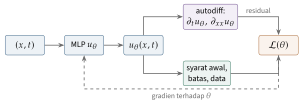

Bab 29
Physics-Informed Neural Networks
PINN tidak punya mata kuliahnya sendiri dalam perjalanan saya. Ia muncul sedikit-sedikit: sebagai neural field yang diatur persamaan di akhir kuliah machine learning lanjut (Bab 15), sebagai kemampuan autodiff menurunkan keluaran terhadap input di kuliah deep learning dasar (Bab 7), dan sebagai salah satu pendekatan yang terus muncul dalam bacaan tentang machine learning untuk mekanika fluida selama mengerjakan tugas akhir. Bab ini merangkai potongan-potongan itu.
Gagasan PINN sederhana. Alih-alih menyelesaikan persamaan diferensial di grid, kita mewakili solusinya dengan jaringan saraf dan melatih jaringan itu agar memenuhi persamaannya. Gagasan ini sudah dicoba pada akhir 1990-an (Lagaris, Likas, dan Fotiadis 1998), dan dipopulerkan kembali dengan nama physics-informed neural networks oleh M. Raissi, Perdikaris, dan Karniadakis (2019), setelah autodiff dan GPU membuatnya praktis.
Resep dasar
Ambil persamaan panas satu dimensi, \(\partial_tu=\kappa\,\partial_{xx}u\) pada \(x\in[0,1]\) dan \(t\in[0,T]\), dengan syarat awal \(u(x,0)=u_0(x)\) dan syarat batas \(u(0,t)=u(1,t)=0\). Sebuah MLP \(u_\theta(x,t)\) menerima koordinat dan mengeluarkan temperatur. Untuk titik mana pun, autodiff memberi \(\partial_tu_\theta\) dan \(\partial_{xx}u_\theta\) secara eksak, sehingga kita bisa menghitung residual persamaan, \[r_\theta(x,t)=\partial_tu_\theta(x,t)-\kappa\,\partial_{xx}u_\theta(x,t).\] Solusi sejati membuat residual nol di mana-mana. Maka kita meminimalkan jumlah kuadrat residual di sekumpulan titik acak di dalam domain, yang disebut collocation points, ditambah suku untuk syarat awal dan syarat batas: \[\mathcal{L}(\theta)=\frac{\lambda_r}{N_r}\sum_{i=1}^{N_r}r_\theta(x_i,t_i)^2 +\frac{\lambda_0}{N_0}\sum_{j=1}^{N_0}\big(u_\theta(x_j,0)-u_0(x_j)\big)^2 +\frac{\lambda_b}{N_b}\sum_{k=1}^{N_b}u_\theta(x_k^b,t_k)^2. \label{eq:pinnloss}\] Kalau ada pengukuran, suku keempat menambahkan selisih kuadrat antara \(u_\theta\) dan data di titik-titik pengukuran. Bobot \(\lambda\) menentukan seberapa penting masing-masing suku, dan seperti akan kita lihat, memilihnya ternyata salah satu bagian tersulit. Gambar 29.1 merangkum alurnya.

Turunan terhadap input dihitung dengan autodiff yang sama dengan backpropagation (Bab 7), hanya dirantai sekali atau dua kali lagi. Untuk satu neuron \(u=\tanh(wx+b)\), turunan pertamanya \(u_x=w\,(1-u^2)\) dan turunan keduanya \(u_{xx}=-2w^2u\,(1-u^2)\). Contoh kecil ini menjelaskan satu aturan praktis PINN: fungsi aktivasi harus mulus. Dengan ReLU, turunan kedua bernilai nol hampir di mana-mana, sehingga jaringan tidak bisa “merasakan” suku difusi sama sekali, dan residual persamaan panas hanya melihat \(\partial_tu\). Karena itu PINN hampir selalu memakai tanh, sinus, atau aktivasi mulus lain.
Mengapa ini masuk akal? Dari sudut pandang Bab 1, suku residual adalah prior: di antara semua fungsi yang cocok dengan data dan syarat batas, pilih yang memenuhi hukum fisika. Dari sudut pandang Bab 15, \(u_\theta\) adalah neural field, dan persamaan diferensial adalah aturan yang ditegakkan pada field itu, persis seperti persamaan Eikonal pada signed distance field.
Contoh kecil yang bisa dihitung tangan
Supaya terasa konkret, ambil persamaan peluruhan \(\dot u=-ku\) dengan \(u(0)=1\) dan \(k=1\), pada \(t\in[0,1]\). Solusi sejatinya \(e^{-t}\), sehingga \(u(1)=e^{-1}\approx0{,}368\). Lagaris, Likas, dan Fotiadis (1998) menyarankan bentuk solusi yang memenuhi syarat awal secara otomatis, \(u(t)=1+t\,N(t)\), dengan \(N\) sebuah jaringan. Untuk contoh tangan, kita ganti jaringan itu dengan konstanta \(a\) saja, sehingga \(u(t)=1+at\). Residualnya \[r(t)=\dot u+u=a+1+at=a(1+t)+1.\] Kita cari \(a\) yang meminimalkan \(J(a)=\int_0^1r(t)^2\,\mathrm{d}t\), versi kontinu dari suku residual dalam Persamaan (29.2). Turunan terhadap \(a\) adalah \(2\int_0^1\big(a(1+t)+1\big)(1+t)\,\mathrm{d}t\). Menyamakannya dengan nol memberi \[a\int_0^1(1+t)^2\,\mathrm{d}t=-\int_0^1(1+t)\,\mathrm{d}t \quad\Longrightarrow\quad a\cdot\frac73=-\frac32 \quad\Longrightarrow\quad a=-\frac9{14}\approx-0{,}643.\] Maka \(u(1)\approx1-0{,}643=0{,}357\), hanya sekitar tiga persen di bawah nilai sebenarnya, padahal “jaringan”-nya hanya satu bilangan. Jaringan sungguhan dengan ribuan parameter bisa mendekati lengkungan eksponensial dengan jauh lebih baik. Contoh ini memperlihatkan inti PINN: tidak ada data solusi sama sekali, hanya persamaan dan syarat awal, dan meminimalkan residual sudah cukup untuk menemukan solusi yang masuk akal.
Masalah invers
Kekuatan PINN yang paling meyakinkan terletak pada masalah invers. Misalkan konduktivitas \(\kappa\) tidak diketahui, tetapi kita punya beberapa pengukuran temperatur. Cukup jadikan \(\kappa\) parameter yang ikut dilatih bersama bobot jaringan. Suku data memaksa \(u_\theta\) cocok dengan pengukuran, suku residual memaksa \(u_\theta\) memenuhi persamaan panas dengan \(\kappa\) yang sedang ditaksir, dan optimasi menemukan \(\kappa\) yang membuat keduanya konsisten. Solver klasik harus dijalankan berulang kali di dalam lingkar optimasi untuk masalah yang sama, sedangkan PINN menyelesaikan masalah maju dan invers sekaligus.
Contoh paling terkenal adalah Maziar Raissi, Yazdani, dan Karniadakis (2020), yang disinggung di Bab 11. Dari video konsentrasi zat pewarna di sekitar sebuah benda, PINN memulihkan medan kecepatan dan tekanan yang tidak pernah diukur, karena persamaan transport zat pewarna dan persamaan Navier–Stokes menghubungkan ketiganya.
Contoh yang bisa diperiksa dengan tangan memperlihatkan logika masalah invers. Untuk persamaan panas dengan difusivitas \(\alpha\) yang tidak diketahui di selang \([0,1]\) dengan ujung bernilai nol, fungsi \(u(x,t)=e^{-\alpha\pi^2t}\sin(\pi x)\) memenuhi persamaan dan syarat batasnya. Misalkan sensor di tengah batang mencatat \(u=1\) pada \(t=0\) dan \(u=0{,}37\) pada \(t=1\). Residual persamaan hanya bisa nol kalau amplitudo meluruh seperti \(e^{-\alpha\pi^2t}\), dan suku data menuntut \(e^{-\alpha\pi^2}=0{,}37\), sehingga \(\alpha=-\ln0{,}37/\pi^2\approx0{,}10\). PINN menemukan angka yang sama dengan menurunkan kedua suku loss bersamaan, tanpa pernah diberi rumus solusinya. Pada masalah nyata, solusinya tidak punya bentuk tertutup, tetapi logikanya sama: persamaan memberi bentuk, data memberi angka.
Contoh ini juga memperlihatkan bahaya masalah invers. Kalau sensor diletakkan tepat di \(x=0\), di mana \(\sin(\pi x)=0\), pengukurannya selalu nol, dan \(\alpha\) tidak bisa ditentukan sama sekali. Pengukuran yang tidak peka terhadap parameter membuat masalahnya ill-posed, dan tidak ada jaringan saraf yang bisa mengatasinya. Memilih letak sensor sama pentingnya dengan memilih arsitektur.
Syarat batas yang ditegakkan
Daripada menghukum pelanggaran syarat batas di loss, syarat itu bisa dibangun ke dalam bentuk solusi, seperti \(1+tN(t)\) di contoh tangan tadi. Untuk syarat Dirichlet \(u(0)=a\) dan \(u(1)=b\) di selang satuan, bentuk \[u_\theta(x)=a(1-x)+bx+x(1-x)\,N_\theta(x)\] memenuhi kedua syarat untuk jaringan \(N_\theta\) apa pun: dua suku pertama adalah garis yang menghubungkan kedua nilai batas, dan suku ketiga bernilai nol di kedua ujung. Loss tinggal suku residual saja, dan masalah keseimbangan bobot antara residual dan batas, yang dibahas di bawah, hilang dengan sendirinya. Untuk geometri yang rumit, fungsi \(x(1-x)\) diganti fungsi jarak yang bernilai nol di batas, misalnya signed distance field dari Bab 15. Syarat Neumann, yang menetapkan turunan di batas, lebih sulit ditegakkan dengan cara ini dan biasanya tetap ditaruh di loss.
Titik collocation juga tidak harus tetap. Pemilihan adaptif berbasis residual menambahkan titik baru di tempat residualnya paling besar, misalnya dengan menarik sampel dengan peluang sebanding dengan kuadrat residual. Daerah dengan gradien tajam, seperti lapisan batas atau muka gelombang, mendapat lebih banyak titik, mirip penghalusan mesh adaptif pada solver klasik.
Mengapa PINN sulit dilatih
Kalau PINN begitu sederhana, mengapa tidak menggantikan semua solver? Pengalaman komunitas selama beberapa tahun memperlihatkan sejumlah kesulitan yang serius (Cuomo dkk. 2022).
Kesulitan pertama adalah keseimbangan suku-suku loss. Wang, Teng, dan Perdikaris (2021) memperlihatkan bahwa gradien suku residual bisa jauh lebih besar dari gradien suku batas, sehingga jaringan memenuhi persamaan di dalam domain tetapi mengabaikan syarat batas. Ini masalah condition number dari Bab 4 dalam bentuk yang khas. Mereka mengusulkan bobot \(\lambda\) yang disesuaikan otomatis berdasarkan besar gradien masing-masing suku. Pendekatan lain memberi setiap titik collocation bobotnya sendiri yang ikut dilatih dengan arah berlawanan, sehingga titik yang sulit mendapat perhatian lebih (McClenny dan Braga-Neto 2023).
Skala masalahnya mudah diperkirakan. Misalkan solusinya mengandung komponen \(\sin(n\pi x)\). Turunan keduanya \(-(n\pi)^2\sin(n\pi x)\), sehingga galat kecil pada komponen ini diperbesar \((n\pi)^2\) kali dalam residual dan \((n\pi)^4\) kali dalam kuadratnya. Untuk \(n=5\), faktor itu sekitar \(6\times10^4\). Suku syarat batas, yang tidak melibatkan turunan, sama sekali tidak diperbesar. Optimizer melihat lanskap yang hampir seluruhnya ditentukan residual, dan syarat batas tenggelam.
Kesulitan kedua berasal dari spectral bias (Bab 15). Analisis neural tangent kernel untuk PINN (Wang, Yu, dan Perdikaris 2022) menunjukkan bahwa komponen solusi dengan frekuensi tinggi dipelajari jauh lebih lambat. Solusi dengan gradien tajam atau osilasi cepat, yang justru menarik dalam fluida, menjadi sulit. Fourier features dan aktivasi sinus membantu.
Kesulitan ketiga diperlihatkan Krishnapriyan dkk. (2021). Untuk persamaan konveksi dengan koefisien konveksi yang besar, PINN standar gagal total meski arsitekturnya cukup ekspresif. Masalahnya terletak pada lanskap loss yang sulit sekali dioptimasi, bukan pada kapasitas jaringan. Melatih bertahap, mulai dari koefisien kecil lalu dinaikkan, atau memecah domain waktu menjadi potongan yang dilatih berurutan, memperbaiki keadaan. Gagasan terakhir ini juga menyentuh masalah kausalitas: PINN melatih seluruh rentang waktu sekaligus, sehingga bisa saja “memenuhi” persamaan di waktu akhir sebelum benar di waktu awal, padahal informasi fisik mengalir dari masa lalu ke masa depan. Wang, Sankaran, dan Perdikaris (2024) mengusulkan bobot yang menegakkan urutan itu secara eksplisit. Rentang waktu dibagi menjadi potongan-potongan, dan residual potongan ke-\(i\) diberi bobot \(w_i=\exp\big(-\epsilon\sum_{k<i}\mathcal{L}_k\big)\). Selama potongan-potongan awal masih punya residual besar, bobot potongan yang lebih akhir hampir nol, sehingga jaringan dipaksa membereskan masa lalu lebih dulu.
Ada beberapa trik lain yang sering dipakai: syarat batas yang dibangun langsung ke dalam bentuk solusi, seperti \(1+tN(t)\) pada contoh di atas, sehingga suku batas tidak lagi dibutuhkan; pemilihan titik collocation secara adaptif, dengan menambah titik di tempat residualnya besar; dan resep optimasi Adam lalu L-BFGS dari Bab 4.
Varian
Beberapa varian mengubah cara persamaan masuk ke dalam loss. Untuk persamaan yang berasal dari prinsip variasi, residual bisa diganti energi. Persamaan Poisson \(-u''=f\) dengan \(u(0)=u(1)=0\), misalnya, adalah syarat minimum dari \[E[u]=\int_0^1\Big(\tfrac12u'(x)^2-f(x)\,u(x)\Big)\,\mathrm{d}x .\] Untuk melihatnya, ganggu \(u\) menjadi \(u+\epsilon v\) dengan \(v\) nol di kedua ujung. Turunan \(E\) terhadap \(\epsilon\) di \(\epsilon=0\) adalah \(\int(u'v'-fv)\,\mathrm{d}x\). Integrasi parsial memindahkan turunan dari \(v\) ke \(u\), dan suku batasnya hilang karena \(v\) nol di ujung, sehingga hasilnya \(\int(-u''-f)v\,\mathrm{d}x\). Supaya nol untuk setiap \(v\), haruslah \(-u''=f\). Deep Ritz (E dan Yu 2017) meminimalkan \(E[u_\theta]\) secara langsung dengan integrasi Monte Carlo. Keuntungannya, loss hanya butuh turunan pertama, bukan turunan kedua, sehingga lebih murah dan lebih stabil. Gagasan yang sama mendasari metode elemen hingga, yang juga bekerja dengan bentuk lemah persamaan.
Untuk domain besar atau solusi yang berubah watak dari satu daerah ke daerah lain, domain bisa dipecah menjadi beberapa subdomain, masing-masing dengan jaringannya sendiri, yang dijahit dengan suku loss tambahan di antarmukanya. XPINN (Jagtap dan Karniadakis 2020) adalah contoh pendekatan ini, dan ia juga memungkinkan pelatihan paralel. Gagasannya mirip dekomposisi domain pada solver klasik: masalah besar yang sulit dipecah menjadi masalah kecil yang lebih mudah.
Penilaian yang jujur
Untuk masalah maju yang tipikal, misalnya aliran di sekitar benda pada bilangan Reynolds menengah, PINN umumnya lebih lambat dan kurang akurat daripada solver klasik yang sudah matang. Setiap kasus baru juga butuh pelatihan baru, karena PINN mempelajari satu solusi, bukan cara menyelesaikan. PINN paling bernilai di tempat lain: masalah invers dan asimilasi data, masalah dengan data sebaran yang tidak lengkap, geometri yang sulit di-mesh, dan masalah berdimensi tinggi di mana grid tidak mungkin dibangun (Karniadakis dkk. 2021). Untuk mempelajari cara menyelesaikan sebuah keluarga persamaan sekaligus, kita butuh pendekatan lain: neural operator dan simulator yang dipelajari, tema bab berikutnya.
Perkembangan riset
Riset PINN beberapa tahun terakhir banyak berfokus pada mengapa pelatihannya sulit dan bagaimana memperbaikinya. Rathore dkk. (2024) menghubungkan kesulitan itu dengan condition number: operator diferensial di suku residual membuat lanskap loss buruk kondisinya, persis contoh skala \((n\pi)^4\) di atas. Mereka membandingkan Adam, L-BFGS, dan gabungan keduanya, mendapati bahwa gabungan Adam lalu L-BFGS paling baik, dan mengusulkan optimizer orde dua baru yang memperbaiki kinerja lebih jauh. PirateNets (Wang dkk. 2024) menyerang masalah lain: PINN dengan jaringan yang lebih dalam sering justru lebih buruk, karena inisialisasi MLP biasa membuat turunan jaringan sulit dilatih. Koneksi residual adaptif mereka membuat jaringan mulai sebagai jaringan dangkal dan perlahan menjadi dalam selama pelatihan, sehingga kedalaman tambahan akhirnya memberi akurasi tambahan.
Catatan sumber.
Bab ini dirangkai dari kuliah Machine Learning: Advanced Techniques (neural field dan loss yang diinformasikan fisika), kuliah deep learning dasar (autodiff), dan bacaan selama tugas akhir. Bacaan utama: M. Raissi, Perdikaris, dan Karniadakis (2019), ulasan Karniadakis dkk. (2021) dan Cuomo dkk. (2022), serta studi tentang kegagalan pelatihan oleh Wang, Teng, dan Perdikaris (2021), Wang, Yu, dan Perdikaris (2022), dan Krishnapriyan dkk. (2021).